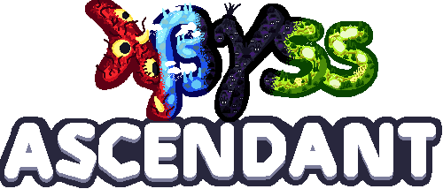
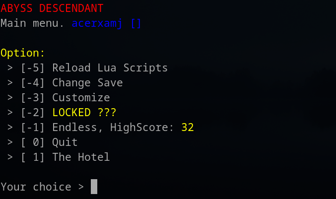
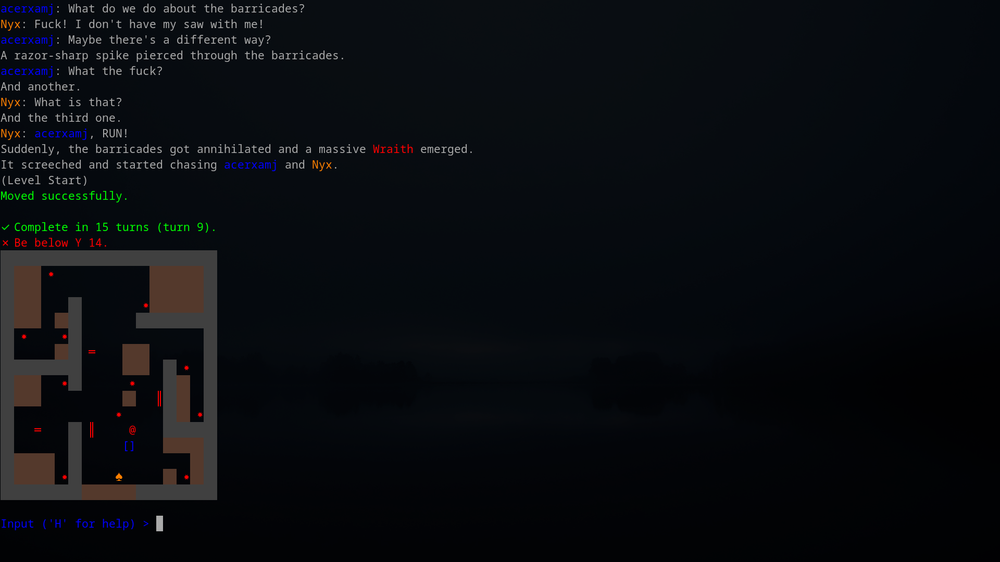
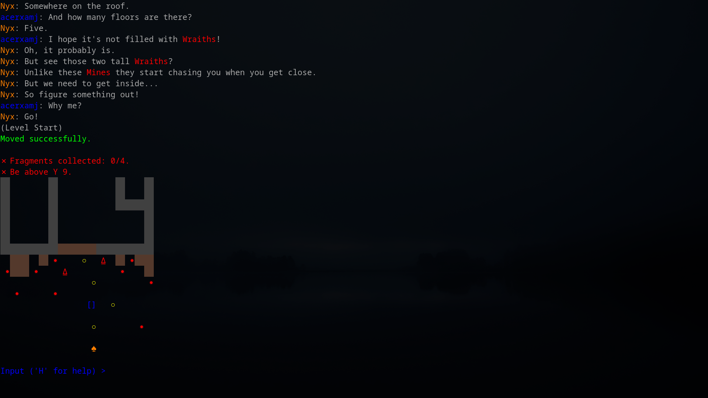
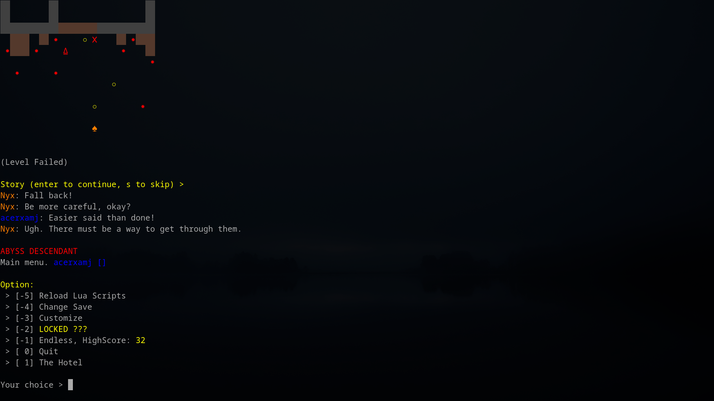
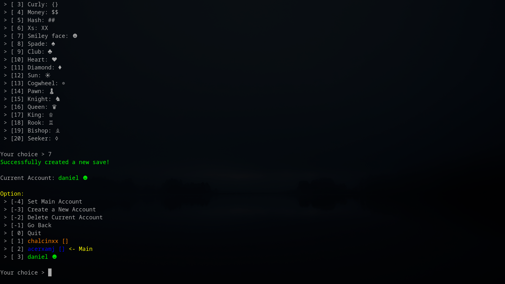
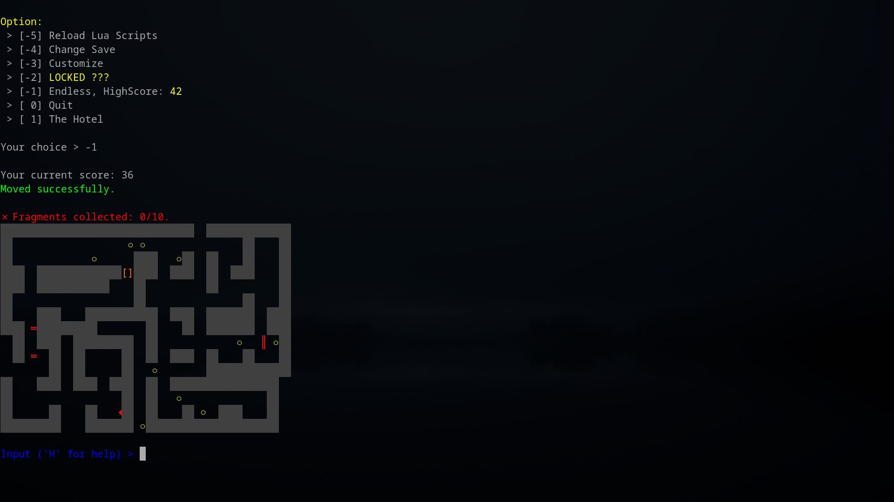
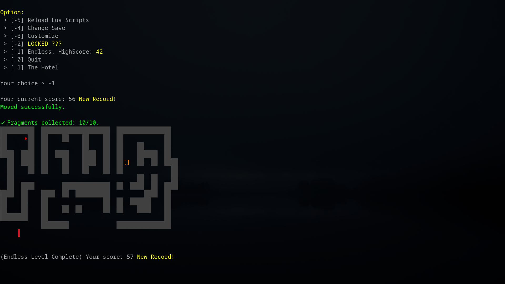
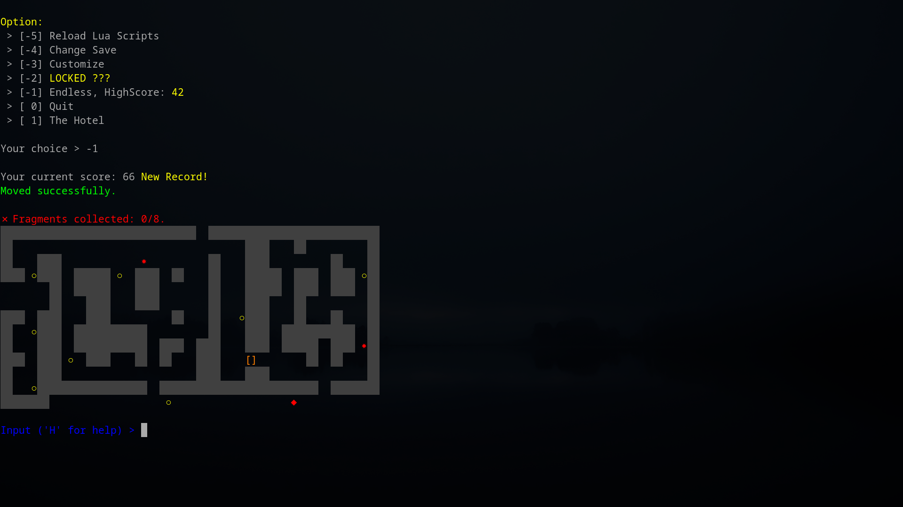

Daniel Vishnevsky
About
⍙
Abyss Ascendant is a CLI turn-based story game about curing Earth from an apocalypse. It was made using C++, SQLite, Lua and SFML. The level editor was made using HTML/CSS/JS.
=
Features
It features a chapter and level system with branching dialogue, procedurally generated endless mode and daily levels and multiple save system. The best part is that everything can be configured with Lua.
Levels can contain obstacles, coins and enemies and each level can have different goals that must be accomplished for the level to be beat. Each enemy has its own movement pattern and aren't threatening by themselves, but the player cannot fight back and they will appear in hordes.
There's also a simple level editor bundled in that you can localhost.
Development
@
This was my first big C++ project after terminal tic-tac-toe, battleships and checkers. I started with a simple map that the player could walk around in. Then added coins that they have to collect. Then added multiple level system (they had to be written in C++ back then). After that I added enemies.
✸
I think what followed next was moving the levels to Lua and the dialogue, which didn't include dialogue branching at first. After that, most likely, came the endless mode. That was such a massive achievement for me. With all of these features the code became hard to navigate and I decided to clean it up. With this came a better main menu and the save system using SQLite.
At some point I also added sounds using SFML, daily levels, custom icons and player colors, dialogue branching and more.
✸
This project really made me enjoy programming. You can see it by the sheer scale of it. It's also what got me into story-telling. I'm still trying to write the same story 2 years later. Sadly, I lost the original story and levels but I fully remember it and I'm rewriting it to the best of my ability. The game is fully open-source on Github.
Gallery
♠







